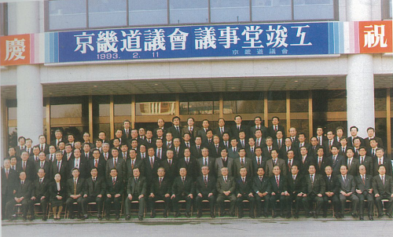

-
초대의회
1949년 지방자치법이 제정됨으로써 지방자치의 근거가 마련되었으나 계속되는 정치·사회적 불안으로 곧바로 시행되지 못하다가 전란기인 1952년 4월 25일 시·읍·면의회 의원선거가 실시되고 이어 같은해 5월 10일 일부 지역을 제외한 전국 7개 도, 360개 선거구에서 최초로 지방의회 의원 총선거가 이루어 졌습니다.
그러나 경기도와 강원도, 서울특별시 그리고 전라북도의 남원군·완주군·순창군·정읍군 등의 4개군은 6.25 전쟁으로 선거가 실시되지 못하였고 4년 후인 1956년 8월 13일 지방의회 의원 총선거를 통해 비로소 도의회가 구성되었습니다. 초대 경기도의회는 45명이 선출되어 1956. 9. 3 개원하였으며, 총 40회의 회의를 개최하여 628건의 안건을 처리하였습니다. -
제2대 의회 1960. 12. 12 ~ 1961. 5. 16
제2대 의회는 1960. 12. 12 선거를 통해 46명의 도의원을 선출하여 1960. 12. 22 개원하였으나 이듬해 1961. 5. 16 군사혁명위원회 포고령 제4호에 의해 강제 해산되었습니다. 제2대 의회는 짧은 기간으로 많은 의정활동을 할 수 없었으나 총 7회의 임시회를 열어 36건의 안건을 처리하였습니다.
-
1991. 7. 8 ~ 1995. 6. 30 제3대 의회
제2대 의회가 강제 해산된 후 30여년 동안 지방자치를 하지 못하고 중앙집권체제가 유지되어 오다가 1990. 12. 31 지방자치법이 개정되어 지방의회의원 선거(1991. 6. 30)를 실시, 제3대 의회를 구성하게 되었습니다. 제3대 의회는 117명의 도의원을 선출하여 1991. 7. 8 개원하였고, 총 46회의 회의를 열어 942건의 안건을 처리하였습니다.
 -
제4대 의회 1995. 7. 1 ~ 1998. 6. 30
제4대 의회는 1995. 6. 27 선거를 통해 지역구의원 123명, 비례대표 13명 등 총 136명의 의원을 선출하여 1995. 7. 14 개원하였습니다.
제4대 의회는 총 35회의 회의를 열어 553건의 안건을 처리하였습니다.
-
1998. 7. 1 ~ 2002. 6. 30 제5대 의회
제5대 의회는 1998. 6. 4 선거를 통해 지역구의원 88명, 비례대표 9명 등 총 97명의 의원을 선출하여 1998. 7. 9 개원하였습니다.
제5대 의회는 총 45회의 회의를 열어 642건의 안건을 처리하였습니다. -
제6대 의회 2002. 7. 1 ~ 2006. 6. 30
제6대 의회는 2002. 6. 13 선거를 통해 지역구의원 94명, 비례대표 10명 등 총 104명의 의원을 선출하여 2002. 7. 7 개원하였습니다.
제6대 의회는 총 40회의 회의를 열어 681건의 안건을 처리하였습니다. -
2006. 7. 1 ~ 2010. 6. 30 제7대 의회
제7대 의회는 2006. 5. 31 선거를 통해 지역구의원 108명, 비례대표 11명 등 총 119명의 의원을 선출하여 2006. 7. 7 개원하였습니다.
제7대 의회부터 의원 유급제가 시행되었고 총 38회의 회의를 열어 1,039건의 안건을 처리하였습니다. -
제8대 의회 2010. 7. 1 ~ 2014. 6. 30
제8대 의회는 2010. 6. 2 선거를 통해 지역구의원 112명, 비례대표 12명, 교육의원 7명 등 총 131명의 의원을 선출하여 2010. 7. 13 개원하였습니다.
제8대 의회는 총 38회의 회의를 열어 1,409건의 안건을 처리하였습니다.
-
2014. 7. 1 ~ 2018. 6. 30 제9대 의회
제9대 의회는 2014. 6. 4 선거를 통해 지역구의원 116명, 비례대표 12명 등 총 128명의 의원을 선출하여 2014. 7. 8 개원하였습니다.
제9대 의회는 2018. 6. 30. 까지 4년간 경기도민을 위해 활동하게 됩니다. 제9대 의회는 총 40회의 회의를 열어 2,208건의 안건을 처리하였습니다. -
제10대 의회 2018. 7. 1 ~ 2022. 6. 30
제10대 의회는 2018. 6. 13 선거를 통해 지역구의원 129명, 비례대표 13명 등 총 142명의 의원을 선출하여 2018. 7. 10 개원하였습니다.
제10대 의회는 2022. 6. 30. 까지 4년간 경기도민을 위해 활동하게 됩니다.
- 홍보담당관 홍길동
- 대표전화 031-000-0000